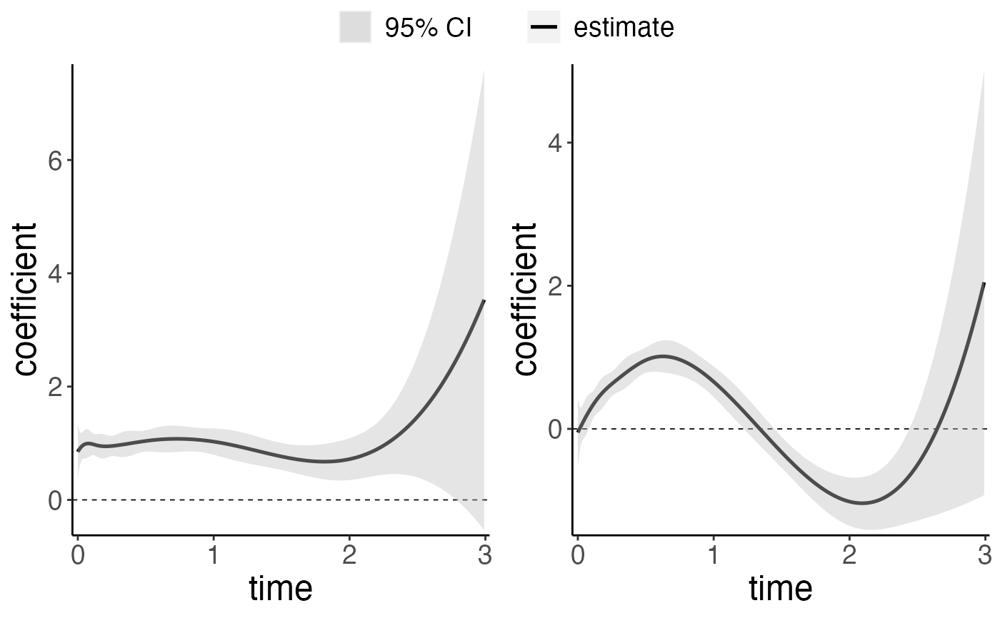

This function creates a plot of the time-varying coefficients from a fitted coxtp model.
# S3 method for coxtp
plot(
fit,
parm,
CI = TRUE,
level = 0.95,
exponentiate = FALSE,
xlab,
ylab,
xlim,
ylim,
allinone = FALSE,
title,
linetype,
color,
fill,
times
)model obtained from coxtp.
covariate name fitted in the model to be plotted. If NULL, all covariates are plotted.
if TRUE, confidence intervals are displayed. Default value is TRUE.
the level of confidence interval. Default value is 0.95.
if TRUE, exponential scale of the fitted coefficients (hazard ratio) for each covariate is plotted.
If FALSE, the fitted time-varying coefficients (log hazard ratio) are plotted.
the title for the x axis.
the title for the y axis.
the limits for the x axis.
the limits for the y axis.
if TRUE, the time-varying trajectories for different covariates are combined into a single plot. Default value is FALSE.
the title for the plot.
the line type for the plot.
the aesthetics parameter for the plot.
the aesthetics parameter for the plot.
the time points for which the time-varying coefficients to be plotted. The default value is the unique observed event times in the dataset fitting the time-varying effects model.
data(ExampleData)
z <- ExampleData$x
time <- ExampleData$time
event <- ExampleData$event
fit <- coxtp(event = event, z = z, time = time)
#> Iter 1: Obj fun = -3.2986480; Stopping crit = 1.0000000e+00;
#> Iter 2: Obj fun = -3.2920862; Stopping crit = 2.1176619e-02;
#> Iter 3: Obj fun = -3.2920355; Stopping crit = 1.6361107e-04;
#> Iter 4: Obj fun = -3.2920353; Stopping crit = 3.7757230e-07;
#> Iter 5: Obj fun = -3.2920353; Stopping crit = 5.0225062e-12;
#> lambda 0.1 is done.
#> Iter 1: Obj fun = -3.3017443; Stopping crit = 1.0000000e+00;
#> Iter 2: Obj fun = -3.2954100; Stopping crit = 2.0664261e-02;
#> Iter 3: Obj fun = -3.2953323; Stopping crit = 2.5346890e-04;
#> Iter 4: Obj fun = -3.2953321; Stopping crit = 4.6097119e-07;
#> Iter 5: Obj fun = -3.2953321; Stopping crit = 1.7713469e-12;
#> lambda 1 is done.
#> Iter 1: Obj fun = -3.3094946; Stopping crit = 1.0000000e+00;
#> Iter 2: Obj fun = -3.3042222; Stopping crit = 1.7708812e-02;
#> Iter 3: Obj fun = -3.3041817; Stopping crit = 1.3597425e-04;
#> Iter 4: Obj fun = -3.3041817; Stopping crit = 6.0903557e-08;
#> Iter 5: Obj fun = -3.3041817; Stopping crit = 2.9828152e-15;
#> lambda 10 is done.
plot(fit$lambda1)
